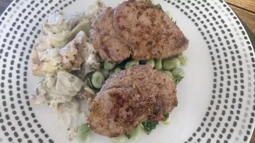

Greek lamb with smoked aubergine & minty broad beans
35 minsServes 2

Many people assume that red meat is bad for you, but eaten in moderation it offers protein, iron and valuable B vitamins. This makes a good choice for a bbq.
Ingredients
1 aubergine
½ lemon, zest and juice plus wedges to serve
2 large cloves garlic, finely grated
1 tsp fresh oregano, or 0.5 tsp dried
2 tsp extra virgin olive oil, plus 0.5 tsp
2 lean leg lamb steaks, about 100 g each, all visible fat removed
100 g frozen baby broad beans or soya beans
2 tbsp Greek bio yogurt
2 tsp tahini
12 mint leaves, roughly torn
Instructions
Turn on your largest gas flame and cook the
aubergine1
on top of it, turning it every 2 minutes, for about 7-8 minutes until it is soft an the skins have charred. You can do this on the bbq if you don't have a gas hob. Allow to cool a little.
Meanwhile, mix the
lemon½
zest, half the
garlic2 large cloves
,
oregano1 tsp
, some black pepper and 0.5 tsp
oil2 tsp
then use this to coat the
lamb steaks2
. Boil the
beans100 g
for 4 minutes.
Put the
aubergine1
on a large plate and carefully remove and discard the skin, then finely chop the flesh, which should now be soft and pulpy, with a knife and fork. Tip into a bowl and stir with the remaining
garlic2 large cloves
,
yogurt2 tbsp
, seasoning and
tahini2 tsp
and stir well.
Griddle or bbq the lamb for 5 minutes, turning once. Meanwhile, mix the